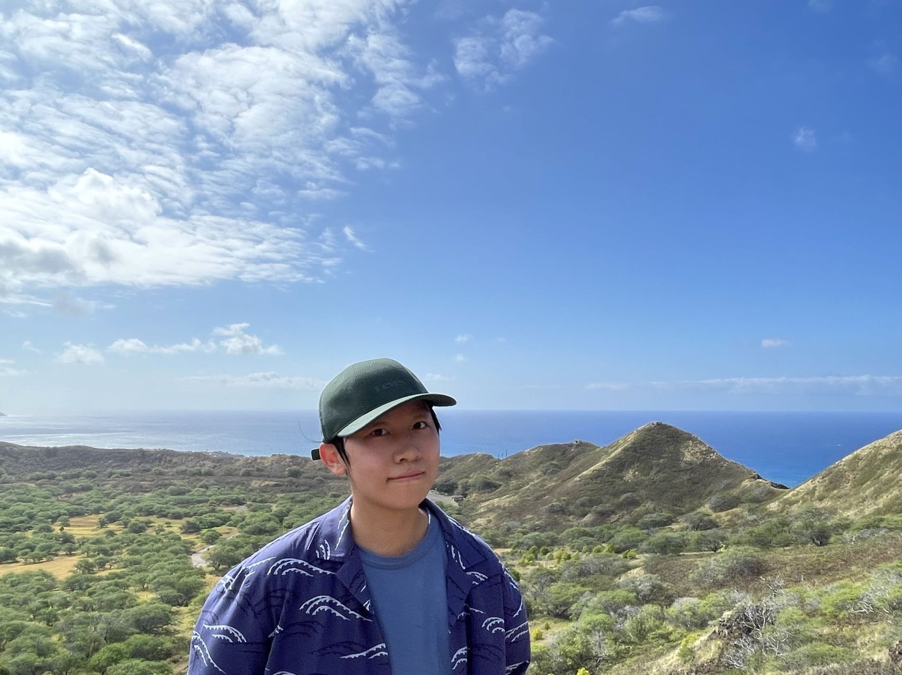

Multimodal QUD: Inquisitive Questions from Scientific Figures
Yating Wu, William Rudman, Venkata S Govindarajan, Alexandros G. Dimakis and Junyi Jessy Li
Preprint, 2026.
ContextWeaver: Selective and Dependency-Structured Memory Construction for LLM Agents
Yating Wu, Yuhao Zhang, Sayan Ghosh, Sourya Basu, Anoop Deoras, Jun Huan and Gaurav Gupta
Preprint, 2026.
QUDsim: Quantifying Discourse Similarities in LLM-Generated Text
[code and data]
Ramya Namuduri, Yating Wu, Asher Zheng, Manya Wadhwa, Greg Durrett and Junyi Jessy Li.
Conference on Language Modeling (COLM), 2025. (査読あり)
Which questions should I answer? Salience Prediction of Inquisitive Questions
[code and data]
Yating Wu†, Ritika Mangla†, Alexandros G. Dimakis, Greg Durrett and Junyi Jessy Li
Conference on Empirical Methods in Natural Language Processing (EMNLP), 2024. 口頭発表(査読あり) 優秀論文賞🏅
QUDeval: The Evaluation of Questions Under Discussion Discourse Parsing
[code and data]
Yating Wu, Ritika Mangla, Greg Durrett and Junyi Jessy Li
Conference on Empirical Methods in Natural Language Processing (EMNLP), 2023. 口頭発表(査読あり)
Elaborative Simplification as Implicit Questions Under Discussion
[code and data]
Yating Wu†, William Sheffield†, Kyle Mahowald and Junyi Jessy Li
Conference on Empirical Methods in Natural Language Processing (EMNLP), 2023. (査読あり)
Discourse Analysis via Questions and Answers: Parsing Dependency Structures of Questions Under Discussion
[code]
Wei-Jen Ko, Yating Wu, Cutter Dalton, Dananjay Srinivas, Greg Durrett and Junyi Jessy Li
Findings of the Association for Computational Linguistics (ACL), 2023. (査読あり)
Modeling Bilingual Disfluencies with Large Language Models
Negin Raoof†, Yating Wu†, Carlos Bonilla†, Junyi Jessy Li, Stephanie M Grasso, Alexandros G. Dimakis and Zoi Gkalitsiou
ICML Workshop on LLMs and Cognition, 2024. (査読あり)